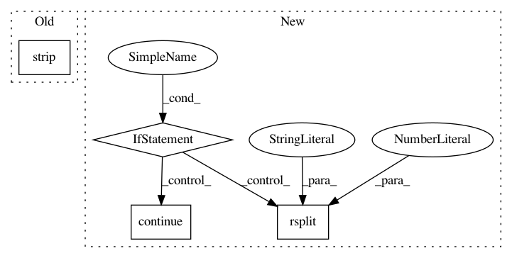

78a9ee2374b191ef273661cd1722fca893f495d2,sos/__main__.py,,list_converter,#,98
Before Change
f_format, t_format = name.split("_")
func = entrypoint.load()
print("{} -> {}\n{}\n".format(f_format, t_format,
textwrap.fill(func.__doc__.strip(), initial_indent=" "*4, subsequent_indent=" "*4)))
except Exception as e:
print("Failed to load converter {}: {}".format(entrypoint.name, e))
After Change
for entrypoint in pkg_resources.iter_entry_points(group="sos_converters"):
try:
name = entrypoint.name
if not name.endswith(".parser"):
continue
f_format, t_format = name.rsplit(".",1)[0].split("_")
parser = entrypoint.load()()
print("===================================")
print("====== {:>8} --> {:<8} ======".format(f_format, t_format))
In pattern: SUPERPATTERN
Frequency: 3
Non-data size: 4
Instances
Project Name: vatlab/SoS
Commit Name: 78a9ee2374b191ef273661cd1722fca893f495d2
Time: 2016-12-08
Author: ben.bog@gmail.com
File Name: sos/__main__.py
Class Name:
Method Name: list_converter
Project Name: vatlab/SoS
Commit Name: 4d4d77fa419b92f8b185cea2b2abe8cf598d1eb0
Time: 2016-10-30
Author: ben.bog@gmail.com
File Name: pysos/main.py
Class Name:
Method Name: get_tracked_files
Project Name: RasaHQ/rasa
Commit Name: 1c0642d53f5733e544da770501ec0e1bbf2b5413
Time: 2020-10-28
Author: alwxndr@gmail.com
File Name: rasa/shared/nlu/training_data/formats/wit.py
Class Name: WitReader
Method Name: read_from_json